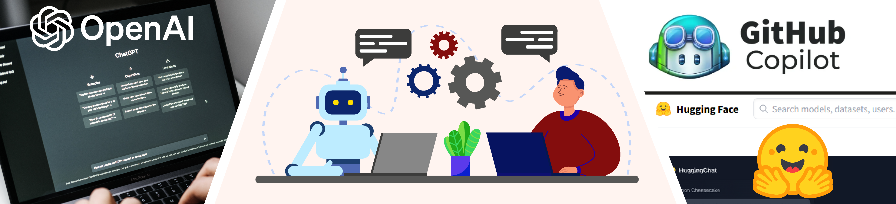

Generative AI & Prompt Engineering¶

This work is licensed under a Creative Commons Attribution 4.0 International License.

Welcome¶
Welcome to this self-paced, asynchronous online workshop on generative AI and prompt engineering for academic research and education.
Generative AI tools are now deeply integrated into how we work, conduct research, teach, and learn. This workshop will help you develop the skills to effectively utilize these powerful tools, focusing on the art of crafting "prompts" — the instructions that guide AI models — and exploring how to integrate AI into daily productivity.
Learning Objectives
After completing this workshop, you will be able to:
- Understand the current generative AI landscape and how it impacts the workplace and classroom
- Create effective prompts for leading AI platforms including Claude, ChatGPT, Gemini, and Copilot
- Apply AI tools to enhance teaching, research, and daily productivity
- Make informed decisions about when and how to integrate AI into your work
- Navigate ethical considerations and responsible AI use in academic contexts
Workshop Agenda & Learning Paths¶
This workshop is organized into five main modules with an estimated 8-12 hours of content. You can complete them in order or skip to sections most relevant to your needs.
| Module | Topic | Time |
|---|---|---|
| 0 | Getting Started - AI landscape and orientation | 30-60 min |
| 1 | Platform Setup - Claude, ChatGPT, Gemini, Copilot | 1-2 hours |
| 2 | Prompt Engineering & Productivity - Core skills and daily use | 2-3 hours |
| 3 | AI in Education - Teaching, tutoring, and academic administration | 2-3 hours |
| 4 | AI for Research - Advanced tools and techniques | 3-4 hours |
| 5 | Ethics & Responsible AI - Ethical frameworks and considerations | 1-2 hours |
View the full agenda with detailed topics and learning paths
Quick Start¶
Choose Your Path
New to AI? Start here:
- AI Landscape Overview - Understand the AI ecosystem
- Set up Claude or ChatGPT - Get your first AI account
- Writing Effective Prompts - Learn core prompting techniques
- Ethics Overview - Understand responsible AI use
Focus on teaching applications:
- Education Overview - AI's role in modern education
- Teaching with AI - Course design and content creation
- AI Tutoring - Personalized learning assistance
- Plagiarism & Detection - Academic integrity
Focus on research applications:
- Research Overview - AI in academic research
- Code Interpreters - Data analysis and visualization
- Agentic AI - Autonomous AI workflows
- RAG - Custom knowledge bases
Focus on technical integration:
- GitHub Copilot - AI pair programming
- Vibe Coding - AI-assisted development
- Model Context Protocol - Tool integration
- OpenAI API - Programmatic access
Prerequisites¶
A computer with internet connection
At least one AI platform account - Free tiers are available for all major platforms:
- Claude - Free or Pro ($20/month)
- ChatGPT - Free or Plus ($20/month)
- Google Gemini - Free or Advanced ($20/month)
- Microsoft Copilot - Free with Microsoft 365
No prior AI experience required - This workshop starts with the basics and progresses to advanced topics
Platform Recommendations
Not sure which platform to choose? See our Platform Comparison Guide for detailed feature comparisons, pricing, and use-case recommendations.
Workshop Sections¶
Setup¶
Get started with major AI platforms. Each guide includes account setup, interface overview, and platform-specific tips.
| Platform | Description |
|---|---|
| Claude | Anthropic's AI with Projects, Artifacts, and MCP support |
| ChatGPT | OpenAI's ChatGPT with GPTs, Canvas, and Advanced Voice |
| Gemini | Google's AI with workspace integration and multimodal capabilities |
| Microsoft Copilot | AI integrated into Microsoft 365 applications |
| GitHub Copilot | AI pair programming for developers |
Prompt Engineering¶
Master the core skills for effective AI interaction.
| Topic | Description |
|---|---|
| Writing Prompts | Core techniques: chain-of-thought, few-shot learning, role-based prompting |
| Daily Productivity | AI for emails, writing, summarization, and workflow automation |
| Code Interpreters | Data analysis, visualization, and computational tasks |
| Vibe Coding | AI-assisted software development and prototyping |
| Choosing a Platform | Compare features, pricing, and use cases |
Education¶
Explore how AI can enhance teaching, learning, and academic administration.
| Topic | Description |
|---|---|
| Overview | AI's transformative role in modern education |
| Teaching with AI | Course design, content creation, and assessment |
| AI Tutoring | Using AI as a personalized learning assistant |
| Admissions & Recruiting | AI for student recruitment and admissions |
| Plagiarism & Detection | AI detection tools and academic integrity |
Research¶
Advanced topics for researchers using AI in their work.
| Topic | Description |
|---|---|
| Overview | AI applications in academic research |
| Agentic AI | Autonomous AI agents and workflows |
| AI Sandboxes | Safe environments for AI experimentation |
| Jupyter AI | AI integration in Jupyter notebooks |
| Model Context Protocol | Claude's MCP for tool integration |
| NotebookLM | Google's AI research assistant |
| Ollama | Running LLMs locally |
| RAG | Retrieval Augmented Generation for custom knowledge bases |
| OpenAI API | Programming with OpenAI's API |
 HuggingFace HuggingFace |
Open-source models and datasets |
| Gradio |
Building AI interfaces |
| Posit (RStudio) | AI tools for R users |
| VS Code & AI Tools | AI extensions for VS Code |
| Text Mining | AI for text analysis and NLP |
Ethics¶
Critical considerations for responsible AI use in academia.
| Topic | Description |
|---|---|
| Overview | Ethical frameworks and principles for AI use |
| Bias | Understanding and mitigating AI bias |
| Legal | Copyright, privacy, and legal considerations |
| Transparency | Disclosing AI use and maintaining integrity |
Hands-On Tutorials¶
Apply your learning with practical case studies and tutorials.
| Tutorial | Description |
|---|---|
| Claude Code Workflow | Complete workflow using Claude Code |
| Public Health Case Study | AI for public health research |
| GIS & Map Making | Creating maps with AI assistance |
About This Workshop¶
This workshop is developed and maintained by the University of Arizona BIO5 Institute, AI2S, & College of Information Science.
This website follows the FAIR and CARE data principles and hopes to help further open science.
All materials are freely available and licensed under Creative Commons Attribution 4.0.